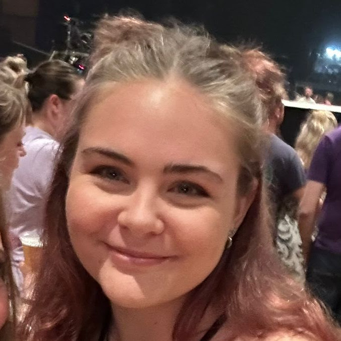

Hi, I'm Zoe, a programmer and current Games Technology student at UWE, Bristol. This is my website where you can see the Projects I have worked on as well as my Devlogs.
If you have any questions, you can contact me here:
I'm an avid programmer, who enjoys being challenged and takes pride in solving problems with a particular passion for educational and serious games.
I also enjoy gaming, my favourite games to play are sandbox style games like Minecraft and Stonehearth but I try to get out of my comfort zone and play a variety of games.
In my spare time I am a Sectional Assistant at my local scout troop, I love camping and the outdoors, you can often find me hiking on evenings and weekends.
